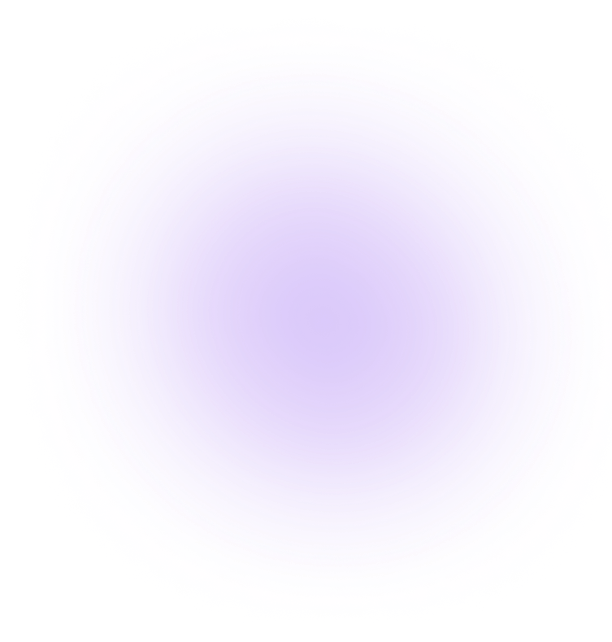

Купить абонемент и вступить в клуб смогут те, кто в Плюсе
За каждую поездку на самокатах такие пользователи получают кешбэк баллами. Баллы можно тратить на поездки на самокатах и такси с Яндекс Go, покупки и заказы в других сервисах Яндекса
